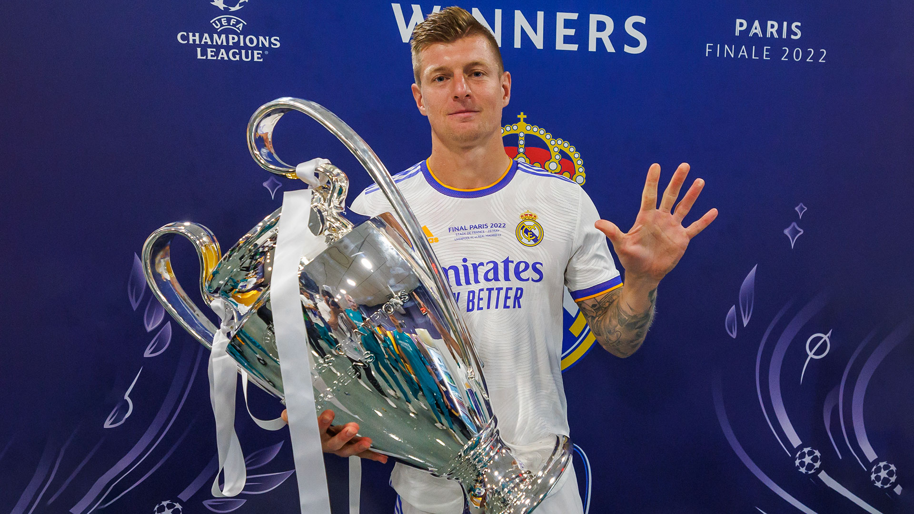

<!DOCTYPE html>
<html lang="id" class="dark">
<head>
  <meta charset="UTF-8">
  <meta name="viewport" content="width=device-width, initial-scale=1.0">
  <title>Praktikum Tailwind CSS</title>
  <link href="../dist/output.css" rel="stylesheet">
</head>
<script>
    const toggleDarkMode = document.getElementById('dark-mode-toggle');
    const htmlElement = document.documentElement;
    toggleDarkMode.addEventListener('click', () => {
      htmlElement.classList.toggle('dark');
    });
  </script>
</body>
</html>
<body class="bg-background dark:bg-slate-600 text-gray-800 dark:text-gray-200 font-sans">
  <!-- Header -->
  <header class="bg-red-600 text-white p-4">
    <div class="container mx-auto flex justify-between items-center">
      <h1 class="text-2xl font-bold">Galeri Foto</h1>
      <button id="dark-mode-toggle" class="btn toggle-dark-mode">Toggle Dark Mode</button>
    </div>
  </header>

  <!-- Hero Section -->
  <section class="py-20">
    <div class="container mx-auto text-center">
      <h2 class="text-4xl font-bold mb-4">Selamat Datang di Galeri Kami</h2>
      <p class="text-lg mb-8">Koleksi foto terbaik untuk Anda.</p>
    </div>
  </section>

  <!-- Grid Layout -->
  <section class="container mx-auto px-4">
    <div class="grid grid-cols-1 sm:grid-cols-2 lg:grid-cols-3 gap-6">
      <!-- Card 1 -->
      <div class="bg-white dark:bg-gray-800 rounded-lg shadow-md overflow-hidden">
        
        <div class="p-4">
          <h3 class="text-xl font-semibold mb-2">Real Madrid</h3>
          <p class="text-gray-600 dark:text-gray-400">Real Madrid juara UEFA SUPER CUP 2024, setelah mengalahkan Atlanta dengan skor 2-0.</p>
        </div>
      </div>
      <!-- Card 2 -->
      <div class="bg-white dark:bg-gray-800 rounded-lg shadow-md overflow-hidden">
        
        <div class="p-4">
          <h3 class="text-xl font-semibold mb-2">Toni Kroos</h3>
          <p class="text-gray-600 dark:text-gray-400">Pernah memenangkan Piala Dunia 2014.</p>
        </div>
      </div>
      <!-- Card 3 -->
      <div class="bg-white dark:bg-gray-800 rounded-lg shadow-md overflow-hidden">
        
        <div class="p-4">
          <h3 class="text-xl font-semibold mb-2">Cristiano Ronaldo</h3>
          <p class="text-gray-600 dark:text-gray-400">Seorang pemain yang pernah bermain di Sporting CP, Manchester United, Real Madrid, Juventus dan Al Nassr FC.</p>
        </div>
      </div>
      <!-- Card 4 -->
      <div class="bg-white dark:bg-gray-800 rounded-lg shadow-md overflow-hidden">
        
        <div class="p-4">
          <h3 class="text-xl font-semibold mb-2">Mesut Özil</h3>
          <p class="text-gray-600 dark:text-gray-400">Mesut Özil adalah mantan pemain sepak bola profesional Jerman yang bermain sebagai gelandang serang.</p>
        </div>
      </div>
  </section>

  <!-- Footer -->
  <footer class="bg-red-600 text-white p-4 mt-10">
    <div class="container mx-auto text-center">
      <p>&copy; 2024 Galeri Foto. All rights reserved.</p>
    </div>
  </footer>